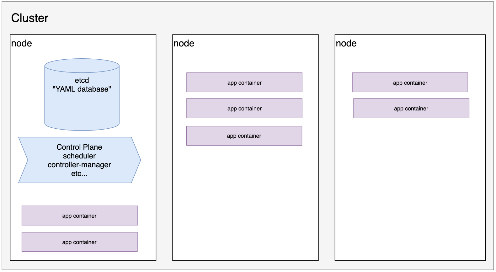
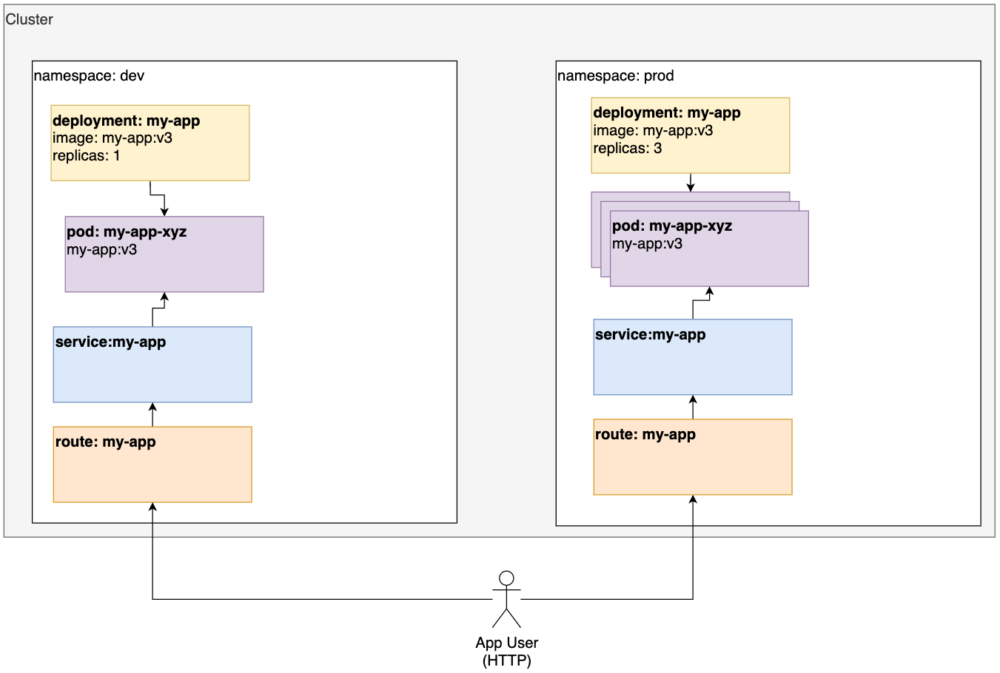

OpenShift and Kubernetes
Overview
You write YAML files that describe what you'd like to have.
You apply those YAML files to Kubernetes.
Kubernetes stores your data in a database called etcd - this stores the desired state of your application.
The Kubernetes control plane looks at etcd, looks at the nodes, then makes the nodes match the desired state.

Project Setup
Create the config directory
cd into the project you created in the docker lesson and make a k8s folder:
cd ~/static-site
mkdir k8s
code .
Create the OpenShift Project
Make sure you are logged into the cluster, either with icc or via Copy Login Command.
Then run the following command, replacing <NAME> with your name, all lowercase, no spaces:
oc new-project <NAME>
For example oc new-project john-smith
Kubernetes Objects
Kubernetes organizes objects by namespace. In OpenShift, namespaces are called Projects.
There are 4 Kubernetes objects you need to know about to make an application available to the internet:
- Deployments - specify which image you want to run, and how many pods to create
- Pods - run containers
- Services - expose your containers to traffic inside the cluster
- Routes - expose your services to traffic from outside the cluster

Deployments
The most basic Kubernetes object you'll work with is a Deployment, which tells Kubernetes:
- which image you would like to run
- how many replicas (instances) you would like to run
Create the file
- Create a file named
k8s/deployment.yaml - Paste the following YAML into the file
- Replace the word
<USERNAME>with your quay.io username
apiVersion: apps/v1
kind: Deployment
metadata:
name: static-site
labels:
app: static-site
spec:
replicas: 1
selector:
matchLabels:
app: static-site
template:
metadata:
labels:
app: static-site
spec:
containers:
- name: static-site
image: quay.io/<USERNAME>/static-site:v1
ports:
- containerPort: 8080
Apply the file
oc apply -f k8s/deployment.yaml
Verify the deployment works
oc get deploy
You should see the following:
NAME READY UP-TO-DATE AVAILABLE AGE
static-site 1/1 1 1 24s
What just happened?
When you applied the file, Kubernetes stored your config in etcd (the "YAML database").
The control plane saw that you wanted 1 replica of static-site:v1 running. It looked at the nodes and couldn't find any.
So the scheduler picked a node, and ran one instance of static-site:v1.
Pods
A Deployment creates Pods. You can see pods by running:
oc get pods
Services
Services allow pods within a Kubernetes cluster to access the pods from your deployment.
Create the file
Create a file named k8s/service.yaml
Paste the following YAML into it:
apiVersion: v1
kind: Service
metadata:
name: static-site
spec:
selector:
app: static-site
ports:
- protocol: TCP
port: 80
targetPort: 8080
Apply the file
oc apply -f k8s/service.yaml
Verify
oc get svc
You should see something like this (the IP will be different):
NAME TYPE CLUSTER-IP EXTERNAL-IP PORT(S) AGE
static-site ClusterIP 172.21.141.7 <none> 80/TCP 2m6s
Routes
Routes are an OpenShift concept. They serve a similar purpose to Kubernetes Ingresses.
Create the file
Create a file named k8s/route.yaml and paste the following contents:
apiVersion: route.openshift.io/v1
kind: Route
metadata:
name: static-site
spec:
tls:
termination: edge
to:
kind: Service
name: static-site
weight: 100
wildcardPolicy: None
Apply
oc apply -f k8s/route.yaml
Verify
oc get routes
This will print something like this:
NAME HOST/PORT PATH SERVICES PORT TERMINATION WILDCARD
static-site static-site-...appdomain.cloud static-site <all> edge None
Copy the HOST/PORT and open it in a browser. You should be able to see your site! 🎉
Additional Challenges
Deploy a new version:
- Make a change to
index.html - Rebuild and push a new version of your docker image to quay.io (for example
v3) - Change
k8s/deployment.yamlto point to this new version and apply it
Scale the app:
- Make a change to
k8s/deployment.yamlto increase the number of replicas - Apply the file
- Use
octo list the pods to make sure they are all there - Repeat the process, but reduce the replicas
UI
Inspect the app in the UI
Cleanup
Run the following command to delete your project, replacing <NAME> with your project name:
oc project default
oc delete <NAME>